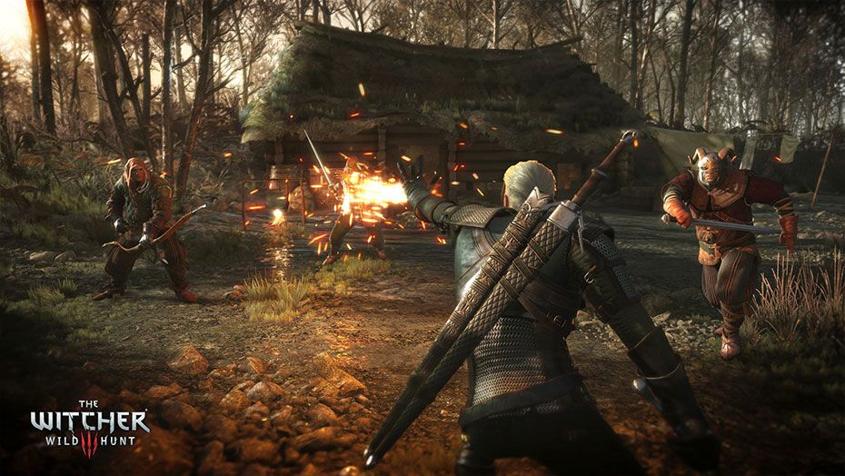
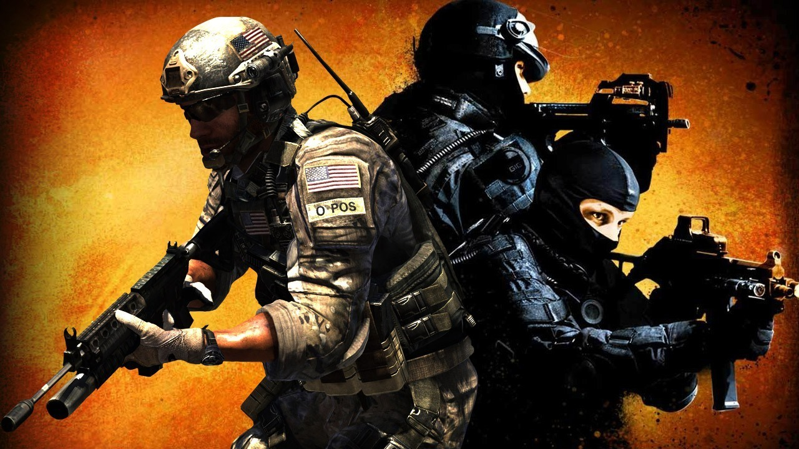

Witcher3
The Witcher 3: Wild Hunt is een actierollenspel van het Poolse CD Projekt RED. De game is de derde in de The Witcher-serie, gebaseerd op boekenserie van Andrzej Sapkowski.
Op 13 oktober 2015 werd er een uitbreiding uitgebracht genaamd: "Hearts of Stone" en een tweede uitbreiding getiteld "Blood and Wine" die werd uitgebracht op 31 mei 2016.
Meer..
Counterstrike
Counter-Strike: Global Offensive (CS: GO) is een first-person shooter die op 21 augustus 2012 door Valve werd uitgebracht. Het spel maakt deel uit van de Counter-Strike-serie en Valve probeerde hiermee terug te keren naar de begintijd van Counter-Strike. Van CS:GO verschenen versies voor Windows, Mac OS X, Linux, PlayStation 3 en Xbox 360.
Meer..
Battlegrounds

BATTLEGROUNDS is een competitieve overlevingschietspel. Spelers worden in een breed, open gebied neergezet, en ze moeten vechten tot de dood - ondertussen word het speelbare gedeelte kleiner, waardoor alles een stukker moeilijker wordt. In de strijd is het ook mogelijk om voertuigen en verschillende wapens te vinden.
Meer..